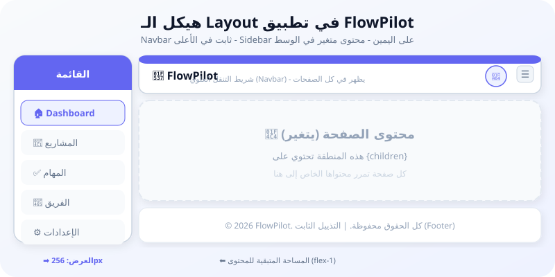
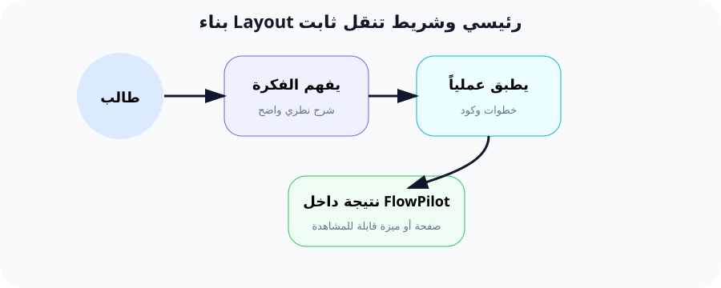

بناء القالب الرئيسي (Layout): شريط التنقل والقائمة الجانبية الثابتة
"المبرمج الذكي لا يكرر نفسه. القالب (Layout) هو سرعة البرمجة وجودة التصميم."
🔍 لماذا هذا الدرس مهم؟
تخيل أن تطبيق FlowPilot سيحتوي على 20 صفحة مختلفة. في كل صفحة، نحتاج إلى شريط تنقل (Navbar) في الأعلى يحتوي على الشعار والروابط الرئيسية، وقائمة جانبية (Sidebar) للتنقل السريع.
الآن تخيل أنك ستنسخ كود الـ Navbar في كل صفحة من الـ 20 صفحة! ماذا لو أردت تغيير لون الخلفية؟ ستعدّل 20 ملفاً! هذا مضيعة للوقت ومصدر للأخطاء.
الحل هو الـ Layout (القالب). وهو ملف واحد نضع فيه كل العناصر المشتركة، ثم كل صفحة جديدة نضع فقط المحتوى الخاص بها داخل القالب. هذا هو مبدأ DRY (Don't Repeat Yourself) - لا تكرر نفسك.
📚 الشرح النظري المفصل
ما هو الـ Layout في React و Inertia؟
الـ Layout هو مكون (Component) React عادي، لكن وظيفته هي تغليف المحتوى الآخر. تخيل أنه "إطار" يحيط بكل صفحة.
الفكرة الأساسية: Layout يستقبل children (أي المحتوى الداخلي) ويعرضه داخل هيكل ثابت.
مبدأ DRY (لا تكرر نفسك)
DRY اختصار لـ Don't Repeat Yourself. هو مبدأ برمجي يقول: "كل معلومة يجب أن يكون لها تمثيل واحد لا لبس فيه في النظام".
ببساطة: إذا وجدت نفسك تنسخ كوداً وتلصقه في أكثر من مكان، فهناك خطأ في تصميمك. استخرج هذا الكود في مكان واحد وأعد استخدامه.
الـ Layout هو تطبيق عملي لمبدأ DRY في تصميم واجهات المستخدم.
كيف يعمل Inertia Layout؟
Inertia يوفر طريقتين لاستخدام Layout:
- الطريقة 1 (المفضلة): إضافة خاصية
layoutلكل صفحة React. هذه هي الطريقة التي سنستخدمها في FlowPilot لأنها تعطينا مرونة. - الطريقة 2 (العامة): تمرير Layout عند تهيئة تطبيق Inertia في
createInertiaApp.
بهذه الطريقة، صفحة Dashboard ستُعرض داخل Layout الذي يحتوي على Navbar و Sidebar.
مكونات الـ Layout في FlowPilot
الـ Layout الخاص بنا سيحتوي على:
- Navbar (شريط التنقل العلوي): شعار FlowPilot، روابط سريعة، صورة المستخدم.
- Sidebar (القائمة الجانبية): روابط التصفح الرئيسية مع أيقونات.
- Main Content (المحتوى الرئيسي): المنطقة التي يتغير محتواها حسب الصفحة.
- Footer (التذييل): حقوق الملكية وروابط إضافية.
تمييز الرابط النشط (Active Link)
من المهم جداً أن يعرف المستخدم في أي صفحة هو حالياً. عندما يكون في "المشاريع"، يجب أن يظهر رابط "المشاريع" بلون مختلف.
Inertia يوفر مكون <Link> يمكنه اكتشاف الرابط النشط:
route().current('projects.*') تتحقق إذا كان المسار الحالي يبدأ بـ "projects" - إذا كان كذلك، نطبق كلاس التمييز.
القائمة المتجاوبة (Responsive Mobile Menu)
على الشاشات الصغيرة (الموبايل)، القائمة الجانبية قد تكون ضيقة جداً. الحل هو إخفاؤها وإظهار زر قائمة (Hamburger Menu) بدلاً منها.
سنستخدم State في React (useState) للتحكم في إظهار وإخفاء القائمة.
🌍 مثال من الحياة اليومية
تشبيه "إطار الصور"
تخيل أن لديك إطاراً خشبياً جميلاً معلقاً على حائط غرفة المعيشة. هذا الإطار هو الـ Layout.
- الإطار: ثابت لا يتغير. له شكل وحجم ولون محدد. (هذا هو Layout - Navbar + Sidebar).
- الصورة داخل الإطار: هي ما يتغير. اليوم قد تكون صورة عائلية، وغداً صورة من السفر. (هذا هو محتوى
{children}). - أنت: عندما تريد تغيير الصورة، تفتح الإطار وتضع صورة جديدة. لا تحتاج لشراء إطار جديد كل مرة!
في البرمجة: نغير "المحتوى" (الصفحات) ونبقي "الإطار" (Layout) ثابتاً. هذا يوفر علينا وقتاً وجهداً كبيرين.
🚀 كيف يخدم هذا الدرس مشروع FlowPilot؟
في FlowPilot، جميع الصفحات الداخلية (Dashboard، المشاريع، المهام، الفريق، الإعدادات) ستشارك نفس الـ Layout.
مكونات Layout FlowPilot:
- Navbar: شعار FlowPilot، زر القائمة الجانبية، صورة المستخدم.
- Sidebar: 🏠 Dashboard | 📁 المشاريع | ✅ المهام | 👥 الفريق | ⚙️ الإعدادات
- Main: محتوى الصفحة الحالية (يتغير حسب الصفحة).
- Footer: © 2026 FlowPilot - كل الحقوق محفوظة.
⚡ التطبيق العملي خطوة بخطوة
الخطوة 1: إنشاء مجلد Layouts وملف AppLayout
المكان: resources/js/Layouts/AppLayout.jsx (أنشئ المجلد أولاً)
الخطوة 2: استخدام Layout في صفحة Dashboard
المكان: resources/js/Pages/Dashboard.jsx
ملاحظة مهمة: السطر الأخير Dashboard.layout = ... هو الذي يربط الصفحة بالـ Layout. بدونه، ستظهر الصفحة فارغة بدون Navbar أو Sidebar.
الخطوة 3: إضافة التمييز للرابط النشط
لنعدّل روابط Sidebar لتظهر بشكل مختلف عندما نكون في الصفحة الحالية.
الخطوة 4: إنشاء مكون Navbar منفصل
المكان: resources/js/Components/Navbar.jsx
الخطوة 5: إنشاء مكون Sidebar منفصل
المكان: resources/js/Components/Sidebar.jsx
الخطوة 6: تحديث AppLayout لاستخدام المكونات المنفصلة
الآن أصبح AppLayout أنظف وأبسط:
📝 شرح الكود سطراً سطراً
تحليل AppLayout.jsx (الأجزاء الرئيسية)
السطر 1: import { useState } from 'react';
نستورد دالة useState من React. هذه الدالة تسمح لنا بإنشاء "حالة" (State) - وهي متغير يمكن أن يتغير ويؤدي إلى إعادة رسم الواجهة. سنستخدمها لتتبع هل القائمة الجانبية مفتوحة أم لا.
السطر 2: import { Link } from '@inertiajs/react';
مكون Link من Inertia هو بديل عن <a> العادي. هو يمنع إعادة تحميل الصفحة بالكامل ويستخدم التنقل عبر JavaScript (SPA-like). يجعل التطبيق أسرع.
السطر 4: export default function AppLayout({ children })
هذه دالة المكون. { children } هو " Prop خاص" في React. أي شيء نضعه بين وسمي <AppLayout>...</AppLayout> سيُمرر كـ children. هذا هو المحتوى المتغير.
السطر 5: const [sidebarOpen, setSidebarOpen] = useState(false);
useState(false) تنشئ متغير حالة بقيمة ابتدائية false (القائمة مقفلة). sidebarOpen هو القيمة الحالية. setSidebarOpen هي دالة نستخدمها لتغيير القيمة. مثلاً setSidebarOpen(true) تفتح القائمة.
تحليل Sidebar.jsx - تمييز الرابط النشط
شرط التمييز النشط
route().current(item.href.replace('/', '') + '*') تتحقق مما إذا كان المسار الحالي (الرابط الذي نحن فيه الآن) يطابق هذا الرابط. علامة * تعني "أي شيء بعد هذا". مثلاً projects* يطابق /projects و /projects/create.
إذا كان التطابق صحيحاً، نضيف كلاس bg-indigo-100 text-indigo-700 (خلفية زرقاء فاتحة ونص أزرق غامق)، وإلا نستخدم الكلاس العادي.
✅ النتيجة المتوقعة
بعد تطبيق الـ Layout، يجب أن ترى:
- شريط جانبي (Sidebar) على اليمين بعرض 256px يحتوي على شعار FlowPilot و 5 روابط.
- شريط علوي (Navbar) يظهر في كل الصفحات بعنوان "FlowPilot" واسم المستخدم.
- الرابط النشط في Sidebar يظهر بلون مميز (خلفية indigo-100).
- على الموبايل، تختفي القائمة الجانبية ويظهر زر ☰ لفتحها.
- التذييل (Footer) يظهر في أسفل كل صفحة.
- كل صفحة جديدة تستخدم Layout تلقائياً دون تكرار الكود.
⚠️ الأخطاء الشائعة
🚫 الخطأ 1: الصفحة تظهر بدون Navbar أو Sidebar
السبب: نسيت إضافة Page.layout = page => <AppLayout>...</AppLayout> في صفحة React.
الحل: أضف السطر بعد تعريف الدالة مباشرة. مثال: Dashboard.layout = page => <AppLayout children={page} />;
🚫 الخطأ 2: خطأ "Cannot read properties of undefined (reading 'current')"
السبب: دالة route().current() قد لا تكون متوفرة إذا لم يتم تثبيت حزمة Inertia بشكل صحيح.
الحل: تأكد من أنك استوردت route من Inertia، أو استخدم usePage() بدلاً منها.
🚫 الخطأ 3: Sidebar يظهر في الموبايل ويغطي المحتوى
السبب: لم نضف كلاس md:block الذي يخفي القائمة في الشاشات الصغيرة ويظهرها في الكبيرة.
الحل: استخدم كلاسات Tailwind: hidden md:block للإخفاء/الإظهار حسب حجم الشاشة.
🚫 الخطأ 4: الضغط على الرابط يعيد تحميل الصفحة بالكامل
السبب: استخدمت <a> بدلاً من <Link> من Inertia.
الحل: استخدم import { Link } from '@inertiajs/react' واستبدل <a> بـ <Link>.
🚫 الخطأ 5: محتوى الصفحة يختفي خلف الـ Navbar الثابت
السبب: الـ Navbar له خاصية sticky top-0 لكننا لم نضف padding علوي للمحتوى.
الحل: أضف pt-16 (أو padding مناسب) للحاوية التي تحتوي على المحتوى الرئيسي.
📊 مخططات توضيحية

هيكل الـ Layout في FlowPilot

تشبيه إطار الصور للـ Layout
📋 ملخص الدرس
المفاهيم الرئيسية
- 🔹 Layout: قالب ثابت يلتف حول محتوى الصفحات.
- 🔹 DRY: مبدأ "لا تكرر نفسك" - الكود المكتوب مرة واحدة يُستخدم في كل مكان.
- 🔹 children: Prop خاص في React يمثل المحتوى الداخلي للمكون.
- 🔹 Active Link: تمييز الرابط الحالي بلون مختلف.
- 🔹 Responsive Design: تصميم يتكيف مع كل أحجام الشاشات.
المصطلحات المهمة
- 🔸 Navbar: شريط التنقل العلوي.
- 🔸 Sidebar: القائمة الجانبية.
- 🔸 useState: دالة React لإنشاء متغيرات الحالة.
- 🔸 Sticky: خاصية CSS تثبّت العنصر عند التمرير.
- 🔸 Hamburger Menu: زر ☰ للقوائم على الموبايل.